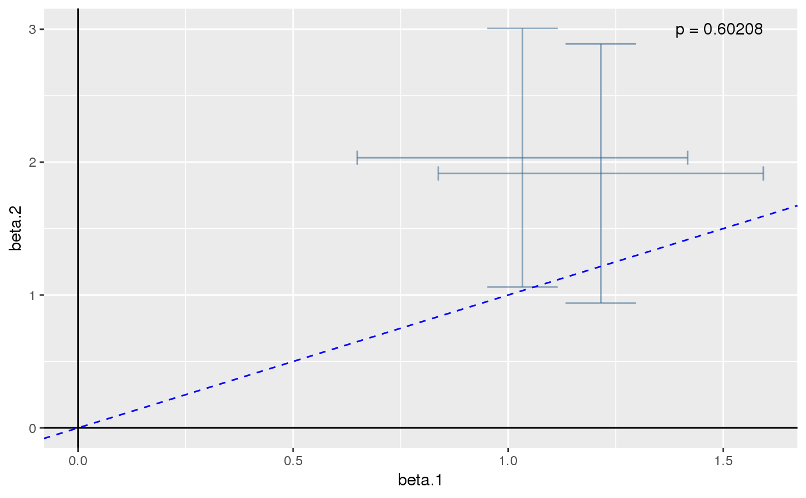

Performs the colocalisation tests described in Plagnol et al (2009) and Wallace et al (2012).
coloc.test(X, Y, vars.drop = NULL, ...)
| X | Either an lm or glm object for trait 1. The intersection of
|
|---|---|
| Y | Either an lm or glm object for trait 2. |
| vars.drop | Character vector naming additional variables in either
regression which are not SNPs and should not be used in the colocalisation
test. They should appear in
|
| ... | other arguments passed to |
a numeric vector with 3 named elements:
The estimated slope.
The chisquared test statistic
The number of snps used in the test. If eta were known, this would be the degrees of freedom of the test. Because eta has been replaced by its ML estimate, Plagnol et al suggest we expect the degrees of freedom to be n-1, but this requires the likelihood to be well behaved which is not always the case. We prefer to consider the posterior predictive p value.
The posterior predictive p value
This is a test for proportionality of regression coefficients from two
independent regressions. Analysis can either be based on a profile
likelihood approach, where the proportionality coefficient, eta, is
replaced by its maximum likelihood value, and inference is based on a
chisquare test (p.value), or taking a hybrid-Bayesian approach and
integrating the p value over the posterior distribution of eta, which
gives a posterior predictive p value. The Bayesian approach can also be used
to give a credible interval for eta. See the references below for
further details.
Plagnol et al's original test was available in his R package
QTLMatch v0.8 which now appears unavailable. The numerically
identical test, extended to allow for more than two SNPs, can be found in
this package by looking at the chisquare statistic and the degrees of freedom
given by chisquare() and df() respectively.
Wallace et al (2012). Statistical colocalisation of monocyte gene expression and genetic risk variants for type 1 diabetes. Hum Mol Genet 21:2815-2824. http://europepmc.org/abstract/MED/22403184
Plagnol et al (2009). Statistical independence of the colocalized association signals for type 1 diabetes and RPS26 gene expression on chromosome 12q13. Biostatistics 10:327-34. http://www.ncbi.nlm.nih.gov/pubmed/19039033
## simulate covariate matrix (X) and continuous response vector (Y) ## for two populations/triats Y1 and Y2 depend equally on f1 and f2 ## within each population, although their distributions differ between ## populations. They are compatible with a null hypothesis that they ## share a common causal variant set.seed(1) X1 <- matrix(rbinom(1000,1,0.4),ncol=2) Y1 <- rnorm(500,apply(X1,1,sum),2) X2 <- matrix(rbinom(1000,1,0.6),ncol=2) Y2 <- rnorm(500,2*apply(X2,1,sum),5) boxplot(list(Y1,Y2),names=c("Y1","Y2"))## fit and store linear model objects colnames(X1) <- colnames(X2) <- c("f1","f2") summary(lm1 <- lm(Y1~f1+f2,data=as.data.frame(X1)))#> #> Call: #> lm(formula = Y1 ~ f1 + f2, data = as.data.frame(X1)) #> #> Residuals: #> Min 1Q Median 3Q Max #> -5.8008 -1.5027 0.0237 1.5084 6.3045 #> #> Coefficients: #> Estimate Std. Error t value Pr(>|t|) #> (Intercept) -0.1931 0.1409 -1.370 0.171 #> f1 1.0331 0.1959 5.275 1.99e-07 *** #> f2 1.2153 0.1928 6.305 6.38e-10 *** #> --- #> Signif. codes: 0 ‘***’ 0.001 ‘**’ 0.01 ‘*’ 0.05 ‘.’ 0.1 ‘ ’ 1 #> #> Residual standard error: 2.116 on 497 degrees of freedom #> Multiple R-squared: 0.1276, Adjusted R-squared: 0.1241 #> F-statistic: 36.36 on 2 and 497 DF, p-value: 1.838e-15 #>#> #> Call: #> lm(formula = Y2 ~ f1 + f2, data = as.data.frame(X2)) #> #> Residuals: #> Min 1Q Median 3Q Max #> -14.7797 -3.2392 0.0128 3.7783 15.9367 #> #> Coefficients: #> Estimate Std. Error t value Pr(>|t|) #> (Intercept) -0.1150 0.5157 -0.223 0.823674 #> f1 2.0334 0.4965 4.095 4.92e-05 *** #> f2 1.9147 0.4976 3.848 0.000135 *** #> --- #> Signif. codes: 0 ‘***’ 0.001 ‘**’ 0.01 ‘*’ 0.05 ‘.’ 0.1 ‘ ’ 1 #> #> Residual standard error: 5.362 on 497 degrees of freedom #> Multiple R-squared: 0.05575, Adjusted R-squared: 0.05195 #> F-statistic: 14.67 on 2 and 497 DF, p-value: 6.442e-07 #>## test whether the traits are compatible with colocalisation ### ppp should be large (>0.05, for example), indicating that they are. par(mfrow=c(2,2)) obj <- coloc.test(lm1,lm2, plots.extra=list(x=c("eta","theta"), y=c("lhood","lhood"))) plot(obj)